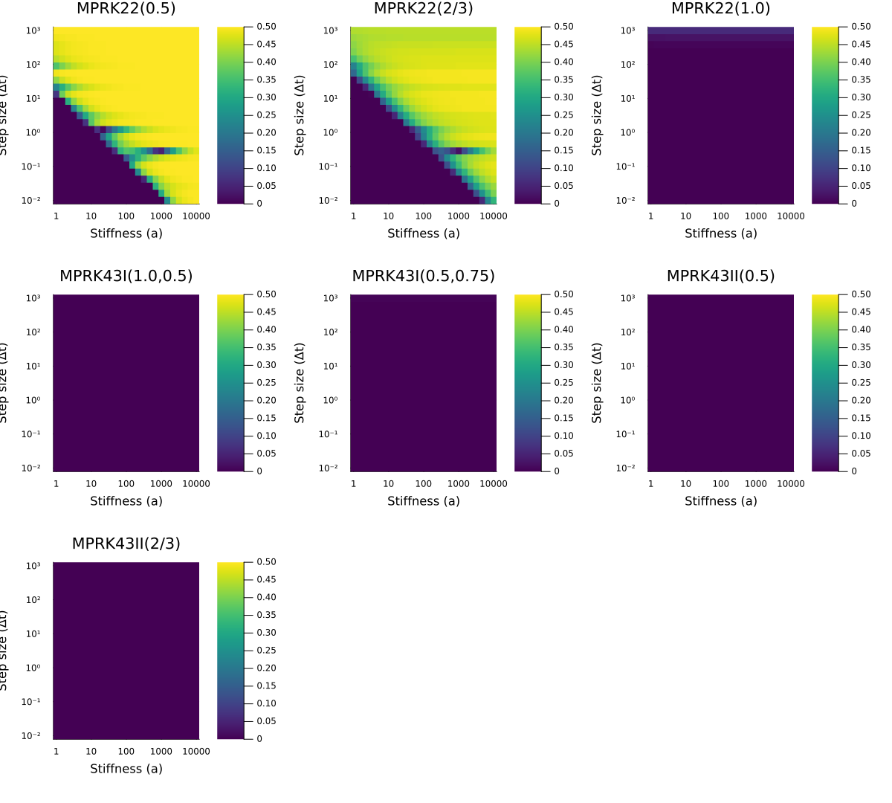
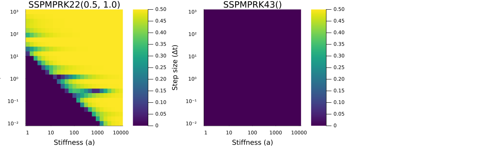
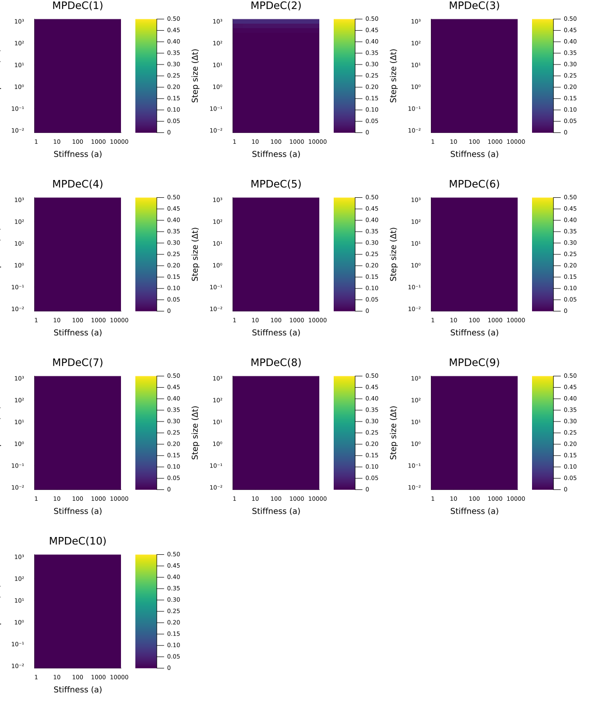
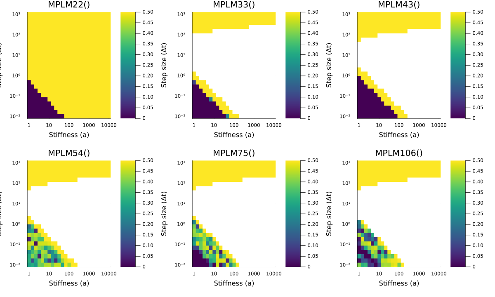
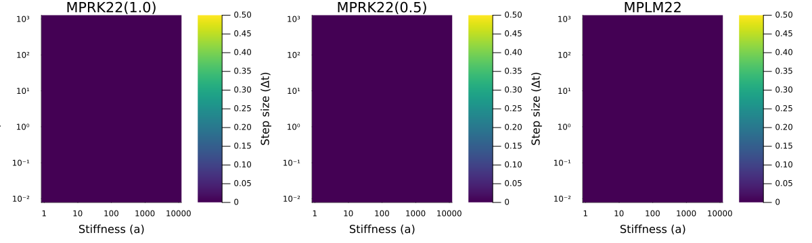
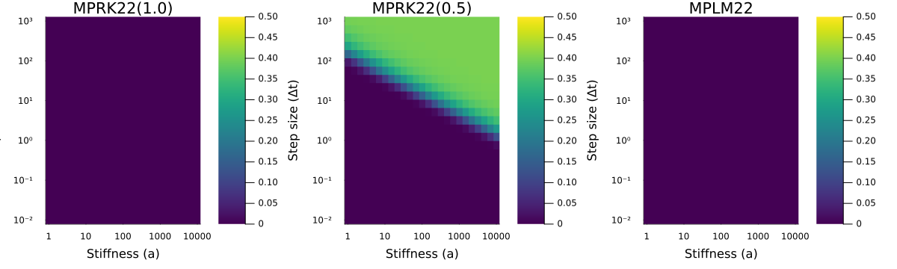
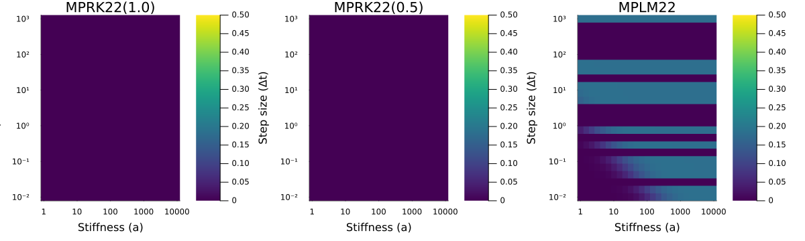

Numerical Stability of Patankar-type Schemes
In this tutorial, we investigate the numerical stability of the implemented Patankar-type schemes.
Test Setup
To analyze stability, we consider a nonlinear and possibly stiff conservative production-destruction system (PDS), which is given by
\[\begin{aligned} u_1' &= \frac{1}{2} a u_2 - a u_1^2, \\ u_2' &= a u_1^2 - \frac{1}{2} a u_2, \end{aligned}\]
where $a$ controls the system's stiffness.
Choosing the initial conditions $u_1(0) = 1-\delta$ and $u_2(0)=\delta$ with $0 \leq \delta \leq 1$ leads to $u_1(t) + u_2(t) = 1$ for all times $t$, and the exact solution of the system becomes
\[\begin{aligned} u_1(t) &= \frac{\frac{1}{2}(u_1(0) + 1) + (u_1(0) -\frac{1}{2})e^{-\frac{3}{2}at}}{(u_1(0) + 1) - (u_1(0) -\frac{1}{2})e^{-\frac{3}{2}at}}, \\ u_2(t) &= 1 - u_1(t). \end{aligned}\]
As $t \to \infty$, the solution approaches the steady-state attractor $(u_1^*, u_2^*) = (0.5, 0.5)$.
To assess the stability of a given scheme, we integrate this system up to a large final time $T = 10^4$ for varying values of the stiffness parameter $a$ and step sizes $\Delta t$ and compute the steady-state error $|u_1(T) - 0.5|$. For a stable scheme suited for stiff problems, this error should be close to zero for all considered configurations.
using PositiveIntegratorsusing StaticArrays# PDS production matrixfunction P_stab(u, p, t) a = p[1] p12 = 0.5 * a * u[2] p21 = a * u[1]^2 return @SMatrix [0.0 p12; p21 0.0]end# steady state of u1steady_state = 0.5# initial valuesu0 = @SVector [0.9, 0.1]# prototype problem with fixed value a = 1.0prob_stab = ConservativePDSProblem(P_stab, u0, (0.0, 1e4), (1.0,) )#Choose grid values for stiffness parameter a and step size dtN = 25a_grid = 10 .^ range(0.0, 4.0, length=N)dt_grid = 10 .^ range(-2.0, 3.0, length=N)The remaining functions are auxiliary functions to automate data generation and plotting.
using SciMLBase: ReturnCodeusing Plotsfunction compute_error(prob, solver, dt::Float64, steady_state::Float64) try sol = solve(prob, solver; adaptive=false, dt=dt, save_everystep=false) if sol.retcode != ReturnCode.Success || isempty(sol.u) || any(isnan, sol.u[end]) || any(isinf, sol.u[end]) return NaN end return abs(sol.u[end][1] - steady_state) catch return NaN endendfunction run_stability_analysis(alg, prob, steady_state, a_vals, dt_vals) error_matrix = zeros(length(dt_vals), length(a_vals)) for (j, a) in enumerate(a_vals) # Wir lesen prob.f direkt aus und bauen das Problem neu auf pds_prob = ConservativePDSProblem(prob.f, prob.u0, prob.tspan, (a,)) for (i, dt) in enumerate(dt_vals) error_matrix[i, j] = compute_error(pds_prob, alg, dt, steady_state) end end return error_matrixendfunction generate_stability_data(algs, labels, prob, steady_state, a_vals, dt_vals) results = Dict{String, Matrix{Float64}}() for (alg, label) in zip(algs, labels) @info "Computing stability matrix for $label..." # Kleines Status-Update in der Konsole results[label] = run_stability_analysis(alg, prob, steady_state, a_vals, dt_vals) end return resultsendusing Plots.Measuresfunction plot_stability_heatmap(a_vals, dt_vals, error_mat, solver_name::String) heatmap(a_vals, dt_vals, error_mat, fill=true, xscale=:log10, yscale=:log10, xticks=([10^0, 10^1, 10^2, 10^3, 10^4], ["1", "10", "100", "1000", "10000"]), yticks=([10^-2, 10^-1, 10^0, 10^1, 10^2, 10^3], ["10⁻²", "10⁻¹", "10⁰", "10¹", "10²", "10³"]), xlabel="Stiffness (a)", ylabel="Step size (Δt)", title=solver_name, clims=(0, 0.5), c=:viridis, bottom_margin=8mm )endfunction plot_stability_grid(results, labels, a_vals, dt_vals) plot_list = [] for label in labels error_mat = results[label] p = plot_stability_heatmap(a_vals, dt_vals, error_mat, label) push!(plot_list, p) end num_plots = length(labels) num_rows = ceil(Int, num_plots / 3) dynamic_height = num_rows * 360 return plot(plot_list..., layout = grid(num_rows, 3), size = (1200, dynamic_height))endNumerical experiments
MPRK Schemes
First, we analyze the classic second- and third-order MPRK schemes based on the classical formulation of Runge-Kutta schemes.
algs_mprk = [ MPRK22(0.5), MPRK22(2.0 / 3.0), MPRK22(1.0), MPRK43I(1.0, 0.5), MPRK43I(0.5, 0.75), MPRK43II(0.5), MPRK43II(2.0 / 3.0)]labels_mprk = [ "MPRK22(0.5)", "MPRK22(2/3)", "MPRK22(1.0)", "MPRK43I(1.0,0.5)", "MPRK43I(0.5,0.75)", "MPRK43II(0.5)", "MPRK43II(2/3)"]mprk_data = generate_stability_data(algs_mprk, labels_mprk, prob_stab, steady_state, a_grid, dt_grid)plot_stability_grid(mprk_data, labels_mprk, a_grid, dt_grid)
All schemes show the desired asymptotic behavior within the considered time frame, except for MPRK22(0.5) and MPRK22(2/3). For these two schemes, the rate of convergence toward the steady state drops significantly for large step sizes and high stiffness, preventing them from reaching the steady-state before $T=10^4$.
SSP-MPRK Schemes
Next, we look at the MPRK methods, which are based on the SSP formulation of Runge-Kutta schemes.
algs_sspmprk = [SSPMPRK22(0.5, 1.0), SSPMPRK43()]labels_sspmprk = ["SSPMPRK22(0.5, 1.0)", "SSPMPRK43()"]sspmprk_data = generate_stability_data(algs_sspmprk, labels_sspmprk, prob_stab, steady_state, a_grid, dt_grid)plot_stability_grid(sspmprk_data, labels_sspmprk, a_grid, dt_grid)
The SSPMPRK43 scheme shows the desired stability properties, but SSPMPRK22(0.5, 1.0) does not reach the steady state across the entire parameter space.
MPDeC Schemes
The Modified Patankar Deferred Correction (MPDeC) family allows creating arbitrarily high-order positivity-preserving schemes. Here we test orders K = 1 to 10.
algs_mpdec = [MPDeC(k) for k in 1:10]labels_mpdec = ["MPDeC($k)" for k in 1:10]mpdec_data = generate_stability_data(algs_mpdec, labels_mpdec, prob_stab, steady_state, a_grid, dt_grid)plot_stability_grid(mpdec_data, labels_mpdec, a_grid, dt_grid)
All schemes show excellent stability behavior and fast convergence to the steady-state across the entire parameter space.
MPLM Schemes
Finally, we evaluate the Modified Patankar Linear Multistep (MPLM) methods, including high-order variants.
algs_mplm = [MPLM22(), MPLM33(), MPLM43(), MPLM54(), MPLM75(), MPLM106()]labels_mplm = ["MPLM22()", "MPLM33()", "MPLM43()", "MPLM54()", "MPLM75()", "MPLM106()"]mplm_data = generate_stability_data(algs_mplm, labels_mplm, prob_stab, steady_state, a_grid, dt_grid)plot_stability_grid(mplm_data, labels_mplm, a_grid, dt_grid)
The white areas in the plots represent parameter configurations where DifferentialEquations.jl triggered an instability warning and aborted the simulation.
None of the MPLM schemes shows excellent stability behavior across the entire parameter space. Instead, they all exhibit a clear diagonal boundary where the steady state is either not reached within the given time frame (yellow/green regions) or the integration fails entirely (white regions) as stiffness increases.
Choice of the test setup
In this section we discuss the choice of the above test problem. Usually, stability is investigated using the linear test equation $y' = a y$ for $a<0$. A straightforward generalization of the linear test equation to a PDS is
\[\begin{aligned} y_1' &= -a y_1, \\ y_2' &= a y_1. \end{aligned}\]
In this section, we also consider two extensions of this non-coupled PDS. The first is the coupled linear PDS
\[\begin{aligned} y_1' &= a y_2 - a y_1, \\ y_2' &= a y_1 - a y_2, \end{aligned}\]
the second is the nonlinear extension
\[\begin{aligned} y_1' &= -a y_1^2, \\ y_2' &= a y_1^2. \end{aligned}\]
function P_1(u, p, t) a = p[1] p21 = a * u[1] return @SMatrix [0.0 0.0; p21 0.0]endfunction P_2(u, p, t) a = p[1] p12 = a * u[2] p21 = a * u[1] return @SMatrix [0.0 p12; p21 0.0]endfunction P_3(u, p, t) a = p[1] p21 = a * u[1]^2 return @SMatrix [0.0 0.0; p21 0.0]endu0 = @SVector [0.9, 0.1]tspan = (0.0, 1e4)prob_1 = ConservativePDSProblem(P_1, u0, tspan, (1.0,))prob_2 = ConservativePDSProblem(P_2, u0, tspan, (1.0,))prob_3 = ConservativePDSProblem(P_3, u0, tspan, (1.0,))algs= [MPRK22(1.0), MPRK22(0.5), MPLM22()]labels = ["MPRK22(1.0)", "MPRK22(0.5)", "MPLM22"]3-element Vector{String}:
"MPRK22(1.0)"
"MPRK22(0.5)"
"MPLM22"We first evaluate the schemes MPRK22(1.0), MPRK22(0.5) and MPLM22() on the uncoupled linear test problem (prob_1), which serves as the direct PDS-counterpart to the classical Dahlquist test equation.
As shown in the stability plots below, all three schemes exhibit a completely uniform, zero-error behavior across the entire parameter space of stiffness $a \in [1, 10^4]$ and step sizes $\Delta t \in [10^{-2}, 10^3]$.
While this initially gives the impression that all three schemes are entirely free of stability or damping issues, the more complex, coupled nonlinear test problems discussed earlier reveal the exact opposite—proving that these simple linear configurations are insufficient to expose the methods' true limitations.
data1 = generate_stability_data(algs, labels, prob_1, 0.0, a_grid, dt_grid)plot_stability_grid(data1, labels, a_grid, dt_grid)
Next, we evaluate the coupled linear PDS (prob_2), which introduces mutual interaction between the components while preserving linearity.
The stability plots reveal a distinct change in behavior compared to the uncoupled case: While MPRK22(1.0) and MPLM22() remain entirely unaffected and show zero error across the entire parameter space, MPRK22(0.5) exhibits a clear limitation regarding its damping properties. For large step sizes $\Delta t$ combined with high stiffness $a$, the error increases significantly because the scheme insufficiently damps initial disturbances, causing it to take excessively long to reach the steady state within the given time horizon. Interestingly, the linear multistep method MPLM22() does not show any such damping limitations here and remains completely unaffected.
data2 = generate_stability_data(algs, labels, prob_2, 0.5, a_grid, dt_grid)plot_stability_grid(data2, labels, a_grid, dt_grid)
Finally, we evaluate the uncoupled nonlinear test problem (prob_3), which retains the uncoupled structure of the first test case but incorporates the quadratic non-linearity $-a y_1^2$.
The resulting stability plots highlight a sharp contrast between the schemes: Both MPRK22(1.0) and MPRK22(0.5) remain entirely stable and unaffected, maintaining zero error across the entire parameter space. In contrast, MPLM22() exhibits distinct structured bands of high error where numerical instabilities occur.
data3 = generate_stability_data(algs, labels, prob_3, 0.0, a_grid, dt_grid)plot_stability_grid(data3, labels, a_grid, dt_grid)
In summary, this section demonstrates that a comprehensive stability analysis of Production-Destruction Systems requires test problems that are both coupled and nonlinear, as simpler linear or uncoupled configurations fail to expose the distinct limitations and damping properties of different Patankar-type schemes.